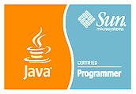

My name is Madhu. I am a Senior developer with good knowledge of back-end technologies. I love spending time on fixing little details and optimizing web apps. Also I like working in a team - I learn more and faster when I am collaborating with others. I do a few other things, of course, but family and software are what I am most passionate about. I want to contribute actively to open source projects because it is a way to develop great software that benefits both the contributor and the community. I don't usually blog but occasionally record things of interest here.
I live in Tallahassee, Florida. I have been a software developer since 2003. I love programming, have deep passion for good software design and take my craftsmanship seriously. When I'm not programming, I'm usually playing outdoors, Biking, Hiking, Camping and more.
Madhu Pathy Chellapilla
Senior Software Engineer | Web Application Developer | Technology Enthusiast
Phone: 850.688.4024, E-mail: madhupathy@gmail.com
I am a full-stack engineer and accomplished problem solver with around 9 years of extensive experience building web applications. Background includes analysis, design, architecture, development, optimization, deployment, testing and support of multitier web applications. Passionate for good software design, love spending time on fixing little details and optimizing web apps. Excellent team collaboration skills.Total ownership mindset; no issue too big or small.
Java/J2EE Technologies: Hibernate, Struts, Wicket, Spring, Guice, TopLink, JUnit, JSP, Guava, gs- collections, JPA, shedulers, JHipster(beginner).
Web Technologies: JavaScript, JQuery, Html, CSS, SOAP, XML, Ajax, Web services (SOAP, WSDL), fusionCharts, drools, JAXB, POI, iText, displayTags, supercsv, Struts2JQuery, jqueryUI, json, gson, tiles, bootstrap.
Languages: Java, JavaScript, JQuery, Pl/Sql, Html, CSS, SOAP, Xml.
Methodologies: Test Driven Development (TDD), Continuous Integration, Scrum, Agile, Domain Driven Development, Mercy less Refactoring, SDLC, OOAD.
Application Servers: JBoss, Weblogic, Tomcat, GAE.
Database: Oracle, MySQL, MS Access, Mongo DB(beginner).
Database Tools: Toad, SQL Developer, PL/SQL Developer.
Testing Tools: LISA, Service Virtualization, Selenium, JMeter, LoadRunner.
Code review Tools: Jira, Find Bugs, PMD, Jenkins and Quality Center.
Build Tools: Maven, ANT, and Continuum.
IDE: IntelliJ, Net Beans, MyEclipise, Eclipse.
Web services Tools: SOAP UI, Axis, Apache Cxf, Oxygen, WebsphereMQ, Tibco, MBeans.
Design Tools: Rational Rose, Erwin, Visual Studio and designing using various IDE plugins.
Versioning Tools: Clearcase, VSS, CVS, SVN, GitHub.
Sr. Programmer Analyst, 02/2014 to Current
Kyra Solutions – Tallahassee, FL, USA
Responsibilities:
Design, implementation, testing and deployment of full stack application (including back end API development, server setup and hosting, deployment, front end UI development) for Florida States Air and Land Division.
Built horizontally scalable back-ends atop Oracle DBs; using spring, hibernate, J2EE; and web-based front-ends with modern, highly interactive Ajax UIs.
Integrated Maps (mapdirect), charts (fusioncharts), reports (iText) to the application.
Identified and suggested new technologies and tools for enhancing product value and increasing team productivity.
Facilitated User Acceptance Testing (UAT), ensuring that all errors were tracked and reported to Development and management teams using Jira, Gitlab.
Sr. Developer, 07/2013 to 01/2014
American Express – Gurgaon, India
Responsibilities:
Interact with various developments, testing teams to collect their engagements and service based requirements.
Analysis of required SOAP and MQ services, creation of virtualized services using CA LISA tool and Development to make it available for the requisite teams.
Maintenance and troubleshooting of virtualized service environment. Development, testing and maintenance of portals using Java and J2EE technologies for test data management.
Creation and maintenance of test data in MS SQL Server.
Creation of Maven server and generation of build script to run, compile and deploy LISA models to enable virtual services.
Performing Regression testing and performance testing to test
functionality of virtualized web services. Day to day
interaction with team members based in US, UK & India
Server Side Java
Developer/Sr. Developer, 11/2011 to 04/2013 TD Ameritrade (Contractor) – Omaha, NE, USA Responsibilities:
Managing all phases of the software development lifecycle (SDLC) like analysis, design, development, implementation, testing and enhancement of web-based & multi-tier software applications using Java/J2EE technologies.
Using Scrum and Agile methodology to deliver working software in smaller batches.
Participated in designing software using Object oriented Analysis & Design (OOAD) principles.
Developed application in accordance with the required Coding Standards and Design Patterns like MVC, Test Driven Development, OOD.
Extensively worked on My Eclipse using various plugins for JBoss, Web Services, UML and design generation, Testing and version control.
Worked on WSDL to Java conversion using various tools like Apace CXF. Axis. Implemented both SOAP and XML web services.
Extensively worked on maven server creation and maintenance.
Developed JUNIT Test Cases, Class Integration Test Case Reports and System Test Case Reports.
Conducted rounds of testing along with code review and code refining with the help of tools like PMD, Find Bugs, etc.
Implemented continuous integration using Jenkins.
System Analyst, Team Lead, 10/2007 to 11/2011
Union Pacific Railroads (Contractor) – Omaha, NE, USA
Responsibilities:
Gathering Business requirements, performing requirement analysis, preparing impact analysis, technical specification and detail design documents.
Design, Development and Implementation of Web-based multi-tier Software Application using Java, Hibernate, Spring, Wicket, XML, Html, JavaScript, Weblogic, Oracle, PL/SQL and web-services.
Test planning and performing Unit Testing, Integration Testing and System Testing.
Providing full-time application support which includes handling user queries, troubleshooting and issue fixing and working on application enhancements.
Built a team of 5 new hire engineers from the ground up in less than 5 months to become high performing team contributor.
Designed front end using Wicket framework and created many reusable Wicket components.
Extensively used code review, refining and Issue tracking tools like Jenkins, PMD, Find Bugs, Hammurapi, JIRA and Quality Center.
Implemented and deployed Florida States air compliance Project which made Florida the only state where Division of Air Resource Management had 100% timely compliance reporting.
Implemented and deployed Florida states land division Project, which was named as one of three key factors improving the State of Florida's 2014 transparency grade from D to A.
At American Express accelerated various applications development process and drastically reduced cost in 6 months up to a million using service virtualization technique, capturing and simulating the behavior and data of unavailable or incomplete systems, removing constraints and reducing software environment infrastructure costs.
Created investment development web based tools at TD Ameritrade such as Know Your Client Suitability and Portfolio Analysis Tool. The tools are widely used by Investment Consultants to provide appropriate Investment advice for Investors.
Received Share Better certificate from Client TD Ameritrade for behavior demonstrating Work together and Strive to win & for the success of the KYCSA Project.
Received Appreciation letter & Bravo award from Union Pacific Railroads for adding value to conceptualizing and implementing new ideas.
Bachelors in Technology: Electronics and Telecommunication, 2007 (BPUT – India)
Sun Certified Java Professional (SCJP - J2SE 5.0).
Brain bench Certified in Hibernate 3.X, JavaScript 1.5, Web Services and Web Designs.
Download Resume

Fundraiser Tool
CSV Reader
PDF Merger
Bootstrap + JQuery + GAE
This
website is created using Bootstrap, JQuery and deployed on Google
App Engine. You can have a look at the source code on GitHub. I
push all of these out to my GitHub repository using the version
control system git.